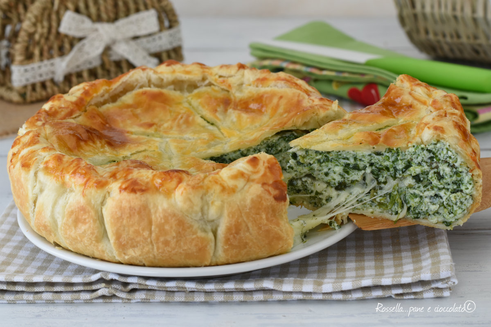

Cotoletta Milanese
Ricetta tipica delle zone vicine Milano.

Fagottini di Asparagi e speck
Piatto tipico del nord Italia.

Lasagne alla Bolognese
Ricetta tipica di Bologna.

Pasta alla Norma
Piatto tipico della Sicilia.

Risotto alla Milanese
Ricetta tipica delle zone vicine Milano.

Torta Fiore
Piatto tipico delle piane italiane.